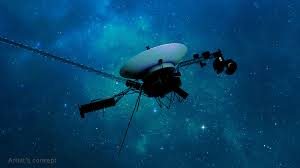

Unmanned Missions
Unmanned space missions have been at the forefront of space exploration for decades. These missions, using robotic spacecraft, probes, and telescopes, have provided humanity with extraordinary insights into the nature of the universe. Without the need to support human life, unmanned missions can travel farther and last much longer, often operating for decades. Some of the most iconic unmanned missions include Voyager, New Horizons, and the Hubble Space Telescope, each contributing significantly to our understanding of the cosmos.
Key Unmanned Space Missions
Voyager Program
The Voyager Program, launched by NASA in 1977, consists of two spacecraft: Voyager 1 and Voyager 2. Both spacecraft were designed to study the outer planets—Jupiter, Saturn, Uranus, and Neptune—before venturing into interstellar space. Voyager 1 became the first human-made object to enter interstellar space in 2012, and both Voyagers continue to send back data from the edge of our solar system, over 40 years after their launch.
New Horizons

New Horizons was launched in 2006 with the primary mission of studying Pluto and its moons. In 2015, New Horizons made a historic flyby of Pluto, capturing unprecedented images and data about the dwarf planet's surface and atmosphere. After its successful Pluto encounter, New Horizons continued its journey, exploring the Kuiper Belt and sending back valuable information about the outer reaches of our solar system.
Hubble Space Telescope
The Hubble Space Telescope has been one of the most important astronomical tools since its launch in 1990. Orbiting Earth, Hubble has provided humanity with breathtaking images of galaxies, nebulae, and distant stars, while helping astronomers measure the expansion rate of the universe. Over three decades of operation, Hubble has revolutionized our understanding of the cosmos and will continue to do so until its decommissioning in the 2030s.
Mars Rovers
NASA's Mars rovers, including Spirit, Opportunity, Curiosity, and the most recent Perseverance, have been vital in exploring the surface of Mars. These robotic explorers have examined the planet's geology, searched for signs of past water activity, and laid the groundwork for future human missions to the Red Planet. Perseverance is currently investigating the potential for ancient life on Mars, while also preparing for the first sample return mission.
James Webb Space Telescope
The James Webb Space Telescope (JWST), launched in 2021, is the successor to Hubble. Positioned nearly a million miles from Earth, JWST is designed to observe the universe in infrared light, allowing it to see through dust clouds and detect faint objects from the early universe. It aims to explore the formation of stars and galaxies, study exoplanet atmospheres, and look deeper into space than any other telescope in history.